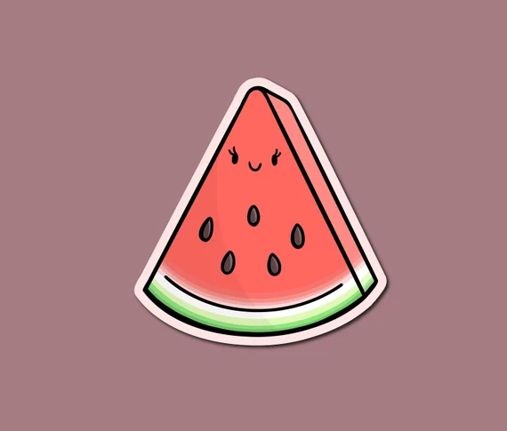

Trebate osveženje?
Svratite na Futošku pijacu, Novi Sad
i uzmite najsvežiju lubenicu po kraljevskoj ceni! 🍉👑
Svratite na Futošku pijacu, Novi Sad
i uzmite najsvežiju lubenicu po kraljevskoj ceni! 🍉👑
🍉 Cena lubenice: 40 RSD / kg

🍈 Cena dinje: 50 RSD / kg
🍈 Cena dinje: 50 RSD / kg
Recenzije zadovoljnih mušterija 💬
Milojko:
“Lubenica je bila tol’ko sočna da sam skoro zaplak’o. Vraćam se sutra!”
Dragica iz Veternika:
“Nisam znala da lubenica može da bude ovako slatka. A i prodavačica je preslatka.”
Pera iz Limana:
“Kupio jednu – žena mi pojela sve. Sad moram opet do Andrijane 😅”
Rista iz Futoga: “Ovo nije lubenica, ovo je terapija! 👏”
📞 Naruči i rezerviši: +381 64 123 4567
🕐 Radno vreme: 07–14h svakog dana
🕐 Radno vreme: 07–14h svakog dana